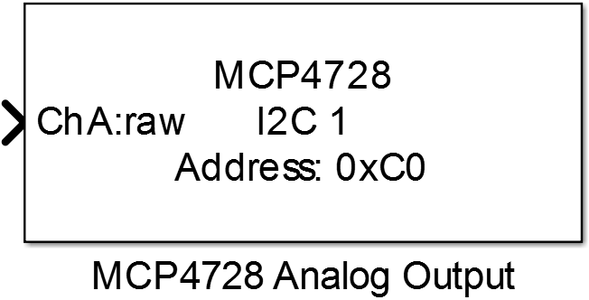
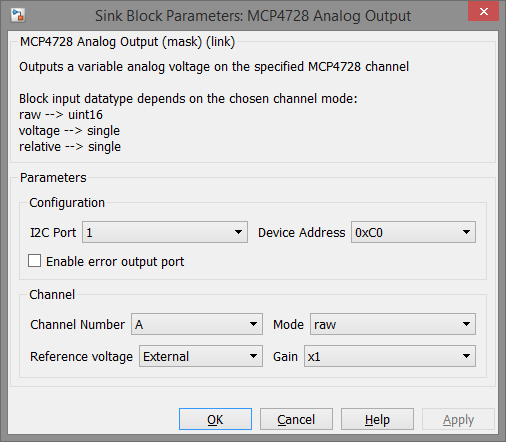

10.6. MCP4728 Analog Output
Outputs a variable analog voltage on the specified channel of MCP4728 digital to analog converter.
10.6.1. Library
/I2C
10.6.2. Description
{kind=link}
This block configures an MCP4728 digital to analog converter to output a variable analog voltage on a specified pin. The MCP4728 provides internal reference voltage of 2.048V which can be boosted to 4.096V by selecting internal gain to 2. In addition external reference voltage can be selected and so output range is 0 to Vdd.
10.6.3. Data Type Support
The block’s input port data type depends on the selected mode parameter:
- raw → uint16
- voltage → single
- relative → single
The error output port data type is boolean.
10.6.4. Parameters and Dialog Box
10.6.4.1. I2C Port
Selects the identifier of the I2C peripheral which is configured by an I2C Config block.
10.6.4.2. Device Address
Bus address of the used MCP4728 device.
10.6.4.3. Enable error output port
Enables an error output port with return values:
- “0” if no error occurred
- “1” if there was an error during communication
10.6.4.4. Channel Number
Selects the output channel of the MCP4728.
10.6.4.5. Mode
Selects the input data type and range
- raw → 0 … 4095
- voltage → 0 … Vref
- relative → 0 … 1
10.6.4.6. Reference Voltage
Selects the reference voltage for the selected channel to internal or external.
10.6.4.7. Gain
If internal reference voltage is selected the output voltage can be boosted to 4.096V with gain of 2.